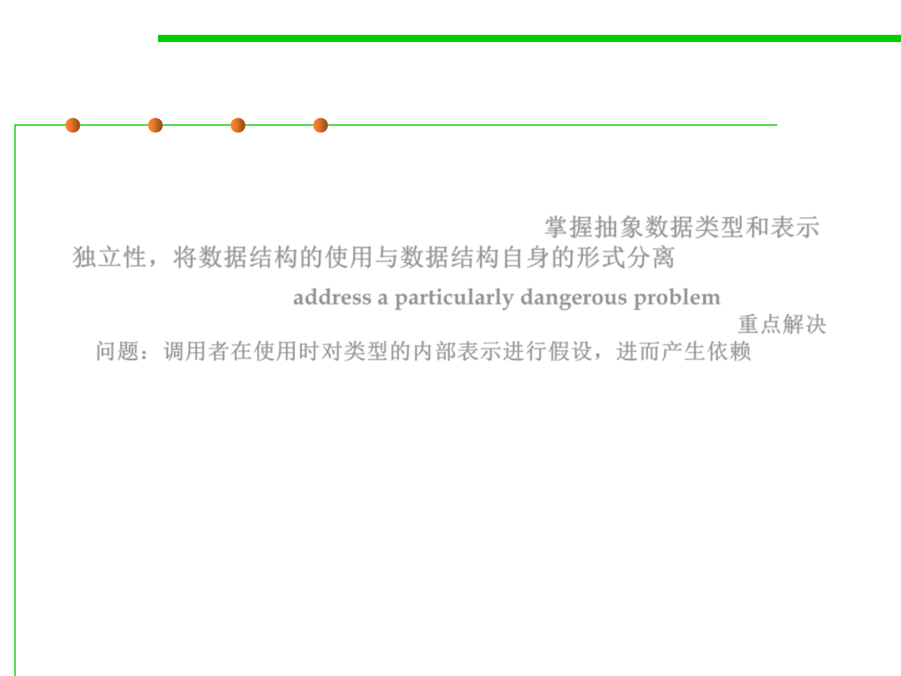

Objective of this lecture
3.3 Abstract Data Type (ADT)
▪ Abstract data types and representation independence: enable us to
separate how we use a data structure in a program from the
particular form of the data structure itself. 掌握抽象数据类型和表示
独立性，将数据结构的使用与数据结构自身的形式分离
– Abstract data types address a particularly dangerous problem: clients
making assumptions about the type’s internal representation. 重点解决
问题：调用者在使用时对类型的内部表示进行假设，进而产生依赖
– We’ll see why this is dangerous and how it can be avoided.
– We’ll also discuss the classification of operations, and some principles of
good design for abstract data types.